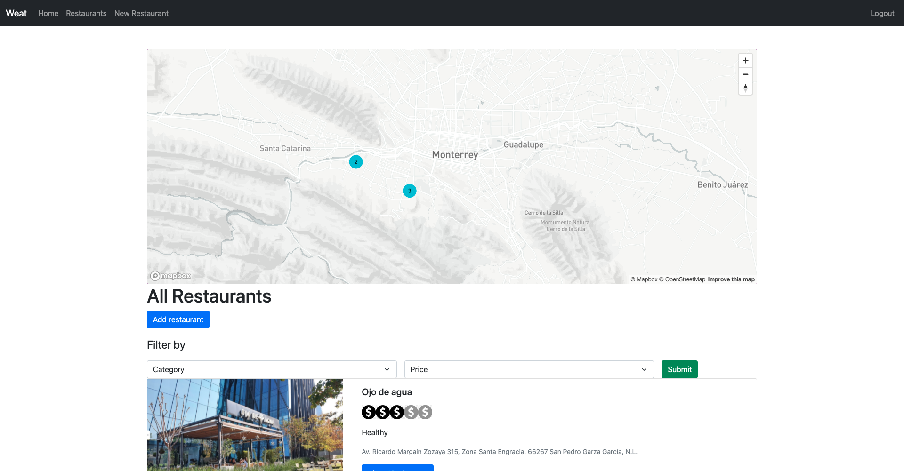
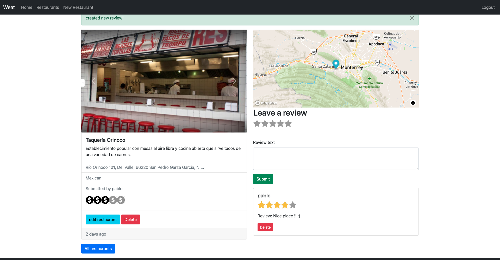
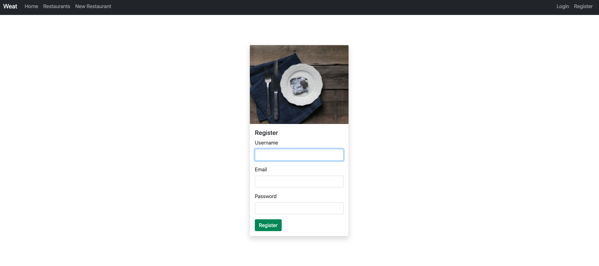
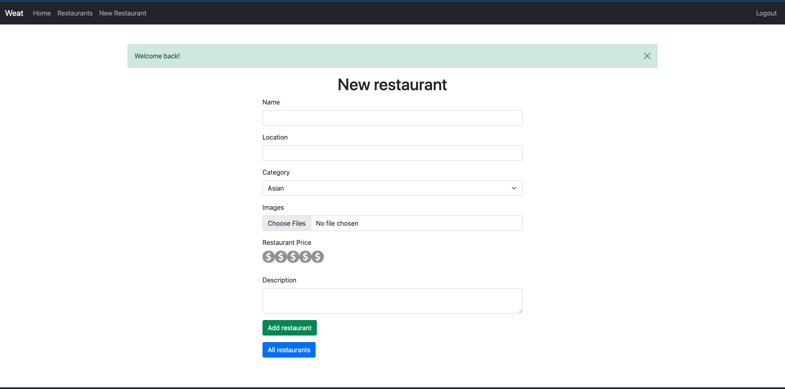
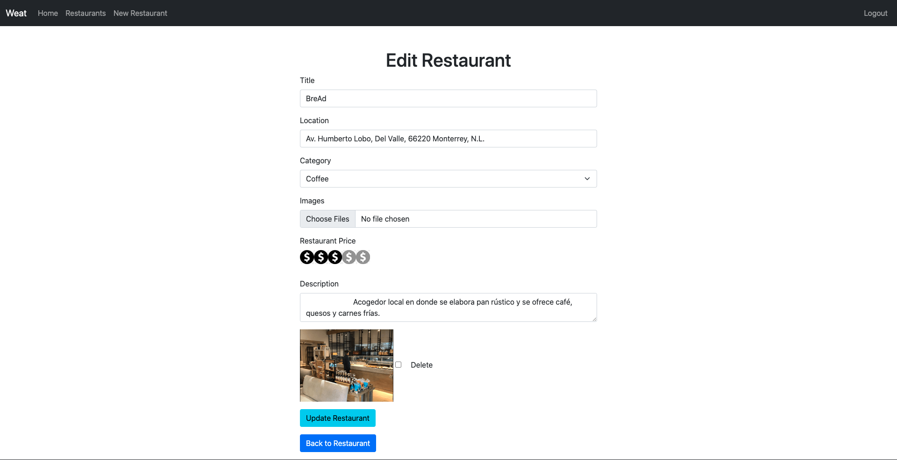

Weat is web application to share with the community some restaurants you like and let other users leave their review about them.

In the index page we have all the restaurants in the platform, you can filter them by category or price and find their location in the map above, where there are clustered.
You can click on any particular restaurant card in the index if you want to see more information about the place or leave a review, delete a review, edit the card restaurant or delete the entire post if you are the owner.
You have to register in order to share restaurants and your opinions about them.
To share a new restaurant you will need to add name, location, the type of food it serves, some images of food and place, a price range from 1 to 5 and a little description.
When you already added a restaurant you can updated it.
This web application was made using Javascript, Bootstrap, Mongo Atlas to store the restaurants and users data, thanks to Bcrypt package the users passwords are hashed in the database for security. We also use some other node packages, like Express and was deployed with Heroku.